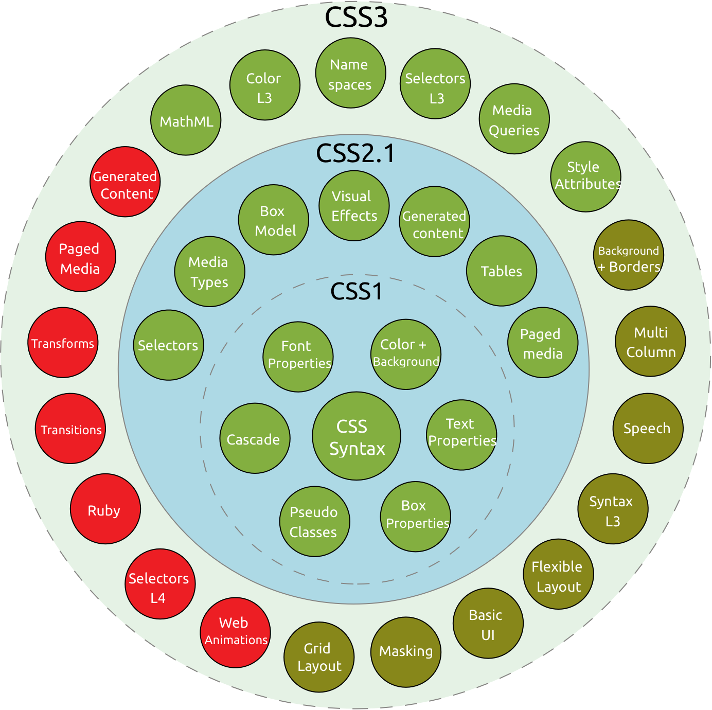

What is CSS?
CSS is a declarative programming language allows web designers, developer, bloggers, and so forth to make websites unique and attractive. CSS gives us the opportunity to play with a page layout, adjust colors and fonts, add effects to images, etc.
CSS is one of three cornerstone technologies used on the web (the other two are HTML and JavaScript). CSS stands for Cascading Style Sheets – the clues are really in the words ‘cascading’ and ‘style’ with cascading describing the way that one style can cascade from one to another.
What is the difference between CSS1, CSS2 and CSS3?
CSS (1996) allows the user to select font style and size and change the colour of the text and background. CSS2 (1998) has capabilities that allows the user to design page layout. CSS3 (1999) allows the user to create presentations from documents and to select from a wider range of fonts including those from Google and Typecast. Uniquely, CSS3 allows the user to incorporate rounded borders and use multiple columns. CSS3 is considered to be easier to use (when compared to CSS2) because it has different modules
What make CSS special
When we write CSS, we don’t tell the browser exactly how to render a page. Instead, we describe the rules for our HTML document one by one and let browsers handle the rendering. CSS followed a predictable and perhaps more importantly, forgiving format and just about anyone could pick it up. That’s a feature, not a bug. Cascading is the core feature of CSS since its inception, styles can cascade from one style sheet to another, enabling multiple types of CSS sources to be used on one HTML document. Inline CSS refers to CSS found in an HTML file, found in the head of a document between style tags. Inlining CSS simply means putting your CSS into your HTML file instead of an external CSS file. Some of the advantages of using CSS are: Easier to maintain and update Greater consistency in design More formatting options Lightweight code Faster download times Search engine optimization benefits Ease of presenting different styles to different viewers Greater accessibility CSS gives you the opportunity to create sites that look very different from page to page, without a lot of extensive coding.
The development of CSS hasn't stopped. Far from it. CSS now has more than 60 modules that define different capabilities, some already part of the standard, some still in development.
